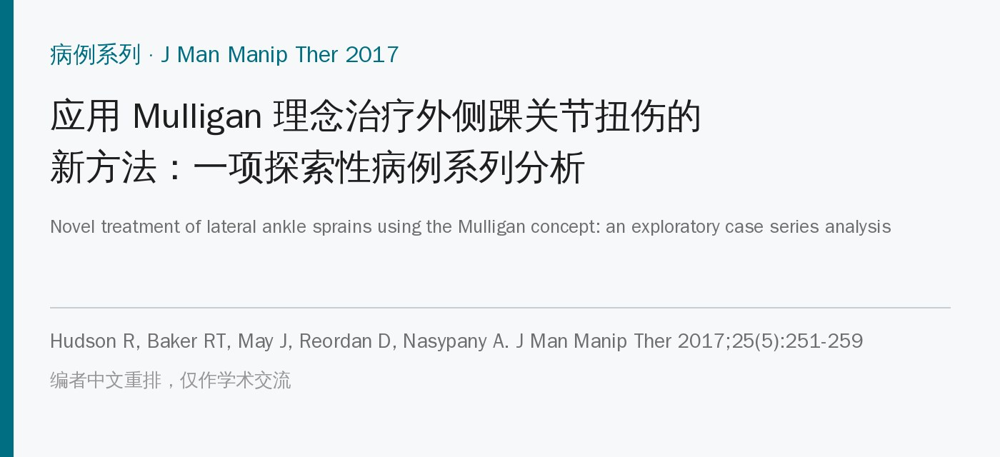
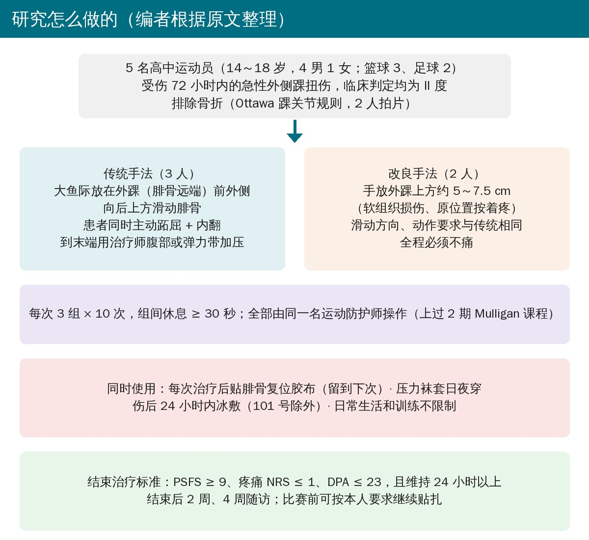
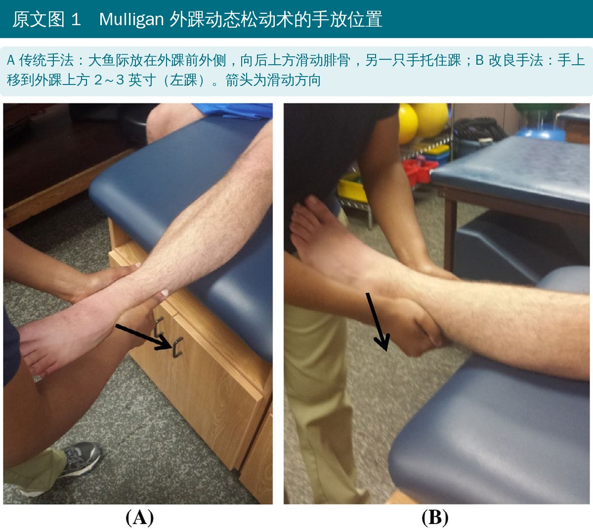
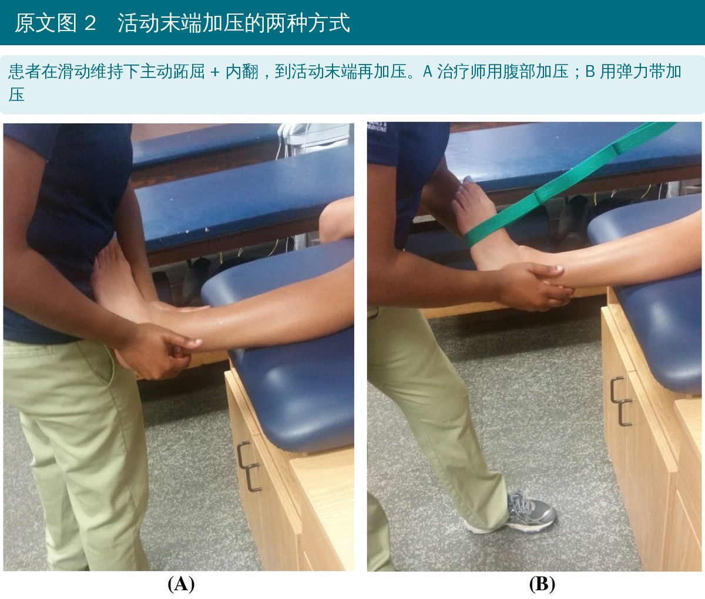
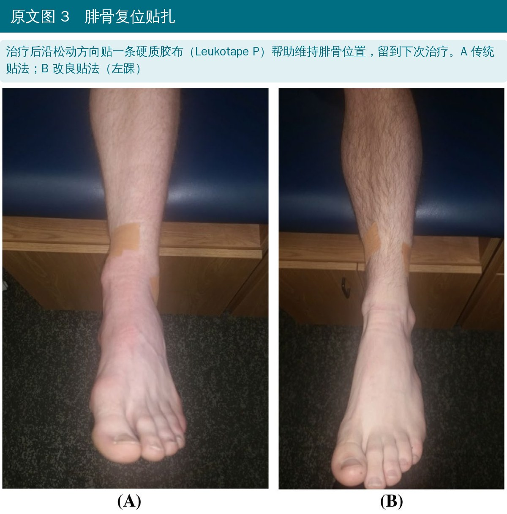
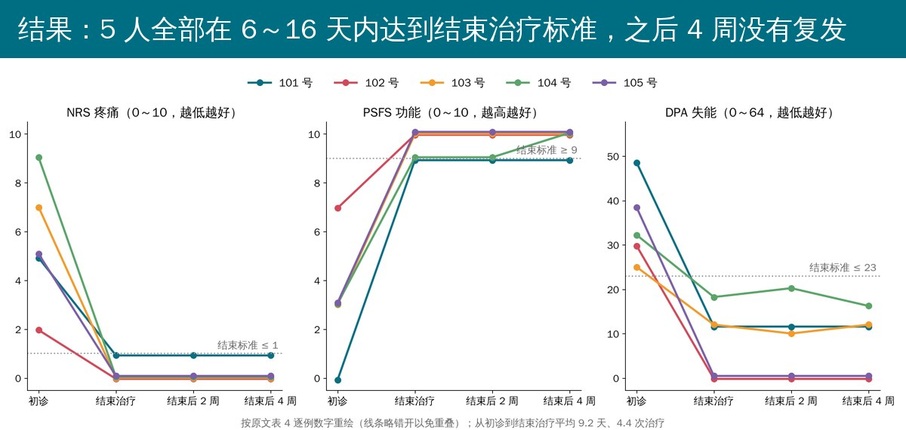

🔖原文信息（编者中文重排）
📚 文献信息
▪ Hudson R, Baker RT, May J, Reordan D, Nasypany A. Novel treatment of lateral ankle sprains using the Mulligan concept: an exploratory case series analysis. J Man Manip Ther. 2017;25(5):251-259. doi:10.1080/10669817.2017.1332557
▪ 中文题目：应用 Mulligan 理念治疗外侧踝关节扭伤的新方法：一项探索性病例系列分析
▪ 作者来自美国康科迪亚路德高中运动医学部、爱达荷大学运动科学系、杰克逊维尔物理治疗诊所
▪ 前瞻性病例系列（证据等级 4 级），5 例，无对照组，结束治疗后随访 4 周
外侧踝扭伤是运动人群最常见的损伤之一，篮球和足球里尤其多。很多人觉得崴脚不算事，多达 55% 的运动员不去看；处理不好会反复扭伤，发展成慢性踝关节不稳，远期还可能出现创伤后骨关节炎。
传统思路关注韧带损伤：保护、冰敷、加压、抬高，再逐步做力量训练。另一种思路认为，内翻扭伤时腓骨远端被带向前方，形成“位置错误”（关节面的微小移位），已有研究发现腓骨位置异常与踝关节不稳有关。
• Mulligan 动态关节松动术（MWM）：治疗师维持一个无痛的关节附属滑动，同时让患者主动做原本会痛的动作
• 核心原则叫 PILL：无痛（Pain-free）、即刻见效（Immediate）、效果持久（Long-Lasting）；调整角度和力度后仍达不到，就不该继续用
• 已有研究支持 MWM 用于亚急性和慢性踝扭伤，但用于受伤 72 小时内的急性期，证据很少
这项研究在一所高中的运动防护室里，观察了5 名急性 II 度外侧踝扭伤的运动员接受 Mulligan 外踝 MWM 后的变化。

🔖研究流程（编者根据原文整理）
• 连续就诊的方便样本：单侧急性外侧踝扭伤，踝关节活动时疼痛
• “急性”定义为受伤 72 小时内首次评估；评估包括病史、视诊、触诊、特殊检查和 Ottawa 踝关节规则
• 排除下肢骨折或治疗部位有开放伤口；101 号、104 号因家长要求拍了 X 线，排除骨折
• 5 人临床分级都是 II 度：中度疼痛、肿胀、压痛，活动受限，稳定性轻到中度受损；其中 3 人前抽屉试验松弛

🔖原文图 1（加中文说明）
• 体位：长坐位，患侧踝悬在床沿外；治疗师站立
• 传统手法：大鱼际放在外踝（腓骨远端）前外侧，向后上方滑动腓骨，另一只手托住踝关节；方向对了，患者的足会轻微背屈、外翻
• 改良手法：原位置有软组织损伤、一按就疼时，把手上移到外踝上方约 2～3 英寸（5～7.5 cm），滑动方向不变
• 维持滑动的同时，患者主动跖屈 + 内翻（也就是受伤的方向）

🔖原文图 2（加中文说明）
• 到活动末端，治疗师用腹部或弹力带加压
• 每次 3 组 × 10 次，组间休息至少 30 秒；全程必须不痛
• 3 人用传统手法，2 人用改良手法；全部由同一名上过 2 期 Mulligan 课程、有 2 年使用经验的运动防护师完成

🔖原文图 3（加中文说明）
• 腓骨复位贴扎：每次治疗后顺着松动方向贴一条硬质胶布（Leukotape P），留到下次治疗
• 压力袜套：7.5 cm 宽的管状压力套，白天和睡觉都穿
• 伤后 24 小时内冰敷（101 号除外）
• 日常生活和运动不限制，按耐受参加
• NRS 疼痛（0～10）：最小临床重要差值和最小可检测变化都按 2 分
• PSFS 患者特定功能量表（0～10）：每人挑一项与自己运动相关、能在防护室里做的动作打分；最小可检测变化 3 分
• DPA 运动人群失能量表（0～64）：急性损伤的最小临床重要差值为下降 9 分
• 结束治疗标准：PSFS ≥ 9、NRS ≤ 1、DPA ≤ 23，并维持 24 小时以上；结束后 2 周、4 周随访
• 统计：配对 t 检验比较第一次治疗前后的疼痛，以及初诊与结束治疗时三项指标；计算 Cohen d
5 人年龄 14～18 岁（平均 15.8 岁），4 男 1 女，篮球 3 人、足球 2 人。平均 4.4 次治疗、9.2 天（6～16 天）达到结束治疗标准；完全停训的天数为 0～2 天。

🔖按原文表 4 逐例数字重绘
• NRS 从 5.6 ± 2.61 降到 3.6 ± 2.88，平均降 2 分（95% 置信区间 1.12～2.88，p = 0.003，d = 0.73）
• 原文称每个人第一次治疗都至少降了 2 分
| 指标 | 初诊 | 结束治疗 | 平均变化（95% 置信区间） | p | d |
|---|---|---|---|---|---|
| NRS 疼痛 | 5.6 ± 2.61 | 0.2 ± 0.45 | −5.4（2.05～8.75） | 0.011 | 2.89 |
| PSFS 功能 | 3.2 ± 2.49 | 9.6 ± 0.55 | +6.4（3.68～9.12） | 0.003 | 3.6 |
| DPA 失能 | 34.8 ± 9.20 | 8.4 ± 8.04 | −26.4（11.28～41.52） | 0.008 | 3.1 |
• 三项平均变化都超过了各自的最小临床重要差值或最小可检测变化
• 结束后 2 周、4 周5 人都维持在结束标准内，没有复发或再次受伤；活动度与健侧相同
• 结束后，5 人比赛前都按自己要求继续贴扎；训练和日常生活不贴、不戴护具
作者结论：Mulligan 外踝 MWM 可以考虑纳入急性 II 度外侧踝扭伤的治疗和康复方案，患者疼痛即刻下降、功能即刻提高，平均 9 天回到运动；但要成为标准治疗，还需要更多研究。
• 没有对照组，只有 5 个人：II 度踝扭伤本身就会在几天到几周内快速好转，看不出多少改善来自手法、多少来自自然恢复
• 混杂措施很多：每个人同时用了贴扎、压力套，4 人还冰敷过；作者也承认，效果不能单独归功于 MWM
• 治疗者就是评估者：同一名运动防护师治疗、收数据，没有盲法；三项指标都是患者自评，期望效应和“想早点回场”的动机都会影响打分
• “9 天回到运动”的比较不对等：作者拿它和传统康复 4～8 周“完全回到运动”比，但这些孩子本来就没怎么停训（0～2 天），结束标准也只是三项量表达标，不是统一的重返比赛测试
• 样本很窄：只有高中运动员，且都是 II 度，结果不能直接推到成年人、III 度扭伤或慢性不稳
• 机制没有验证：没有影像证实腓骨真的“错位”或被“复位”，“纠正位置错误”只是一种解释
• 随访只有 4 周：看不到再扭伤率和慢性不稳这些更重要的远期结局
• n = 5 用配对 t 检验：样本太小，p 值和效应量都不稳定，参考价值有限
• “疼痛至少下降 4 分”：正文说从初诊到结束治疗每个人疼痛都至少降了 4 分，但表 4 中 102 号初诊 NRS 只有 2 分，结束时 0 分，只降了 2 分
• “即刻提高功能”没有数据：摘要和结论都说功能即刻提高，但第一次治疗前后的 PSFS 没有给出任何统计；讨论又说只有“5 人中 4 人”功能提高，而结果部分却写“所有人第一次就诊功能都至少提高 2 分”
• PSFS 没有 MCID，表 4 却说达到了：方法明确说文献里找不到 PSFS 的最小临床重要差值，表 4 却写 4 名患者第一次治疗后 PSFS “达到 MCID”
• PSFS “超过”最小可检测变化：原文说每个人的 PSFS 改善都超过 3 分，102 号从 7 分到 10 分正好 3 分，只是“达到”；原文还把 PSFS 的提高写成了“reduction（下降）”
• “100% 无痛”：讨论说结束后 2 周、4 周 100% 的患者无痛，但 101 号这两次随访 NRS 都是 1 分
• 表格引用错了：正文说传统 / 改良手法的分配见表 1，实际在表 2（表 1 是扭伤分级）
• 治疗次数的标准差：5、4、4、4、5 次的标准差应为 0.55，原文写 0.56
• 贴扎说法前后不一：讨论说“所有患者”结束后都继续贴扎，方法和同一句后半句又说是“应本人要求”
• 急性的边界：入组标准是受伤 72 小时内，101 号正好约 72 小时才第一次治疗，处在边界上
• 用词和拼写：Disablement in the Physically Active 在方法里写成 Disability；FRT 写成 FTR；cranial 写成 crainal；“case series”在讨论里又写成“case study”
• 急性 II 度外踝扭伤，排除骨折后可以试 MWM：受伤后几天内就能用，前提是严格无痛
• 先试，再决定：大鱼际放外踝前外侧，向后上方滑动腓骨，让患者主动跖屈内翻；当场疼痛减轻、活动变大才继续，不痛不灵就换方法
• 手放的位置疼，就往上移：外踝周围肿痛明显时，把着力点上移 5～7.5 cm，方向不变
• 剂量参考：3 组 × 10 次，组间休息 ≥ 30 秒，治疗后顺着松动方向贴扎
• 别只做手法：这项研究同时用了贴扎、压力套和冰敷，临床上也应该和加压、平衡训练、力量训练和重返运动测试一起安排
• 用量表追踪：NRS、PSFS、DPA 都简单易用，可以作为是否结束治疗的参考
• 结论先打个折：5 人、无对照、多种措施同时用、随访只有 4 周，只能说“值得研究”，还不能说 MWM 比常规治疗更快
表 1 踝扭伤临床分级（Beynnon 等，2006）
| 分级 | 表现 |
|---|---|
| I 度（轻度） | 肿胀和压痛很轻；功能几乎不受影响；关节没有机械性不稳 |
| II 度（中度） | 中度疼痛、肿胀，受累结构压痛；部分活动受限；稳定性轻到中度受损 |
| III 度（重度） | 韧带完全断裂，明显肿胀、出血、压痛；功能丧失；活动和稳定性明显异常 |
表 2 患者基本情况
| 患者 | 性别 | 项目 | 年龄 | 治疗次数 | 到结束治疗（天） | 完全停训（天） | 手法 | 受伤到首次治疗 |
|---|---|---|---|---|---|---|---|---|
| 101 | 男 | 篮球 | 18 | 5 | 8 | 1 | 改良 | 约 72 小时 |
| 102 | 男 | 足球 | 14 | 4 | 6 | 0 | 传统 | 约 24 小时 |
| 103 | 男 | 篮球 | 17 | 4 | 7 | 2 | 传统 | 约 24 小时 |
| 104 | 女 | 篮球 | 15 | 4 | 16 | 2 | 改良 | 约 48 小时 |
| 105 | 男 | 足球 | 15 | 5 | 9 | 2 | 传统 | 约 24 小时 |
表 3 初诊时的症状和分级
| 患者 | 分级 | 压痛部位 | 前抽屉试验 | 水肿 | 瘀斑 | 活动度（背屈 / 跖屈） |
|---|---|---|---|---|---|---|
| 101 | II | 距腓前韧带 + 跟腓韧带 | 松弛 | 中度 | 外踝 / 足外侧中部 | 10° / 22° |
| 102 | II | 距腓前韧带 | 不松弛 | 轻微 | 无 | 16° / 48° |
| 103 | II | 距腓前韧带 | 不松弛 | 轻微 | 无 | 15° / 45° |
| 104 | II | 距腓前韧带 + 跟腓韧带 | 松弛 | 中度 | 后足外侧 | 16° / 42° |
| 105 | II | 距腓前韧带 + 跟腓韧带 | 松弛 | 中度 | 后足外侧 | 14° / 38° |
原文表 3 中前抽屉试验和活动度均标注“伴疼痛”。
表 4 各时间点逐例数据（NRS / PSFS / DPA）
| 患者 | 初诊 | 结束治疗 | 结束后 2 周 | 结束后 4 周 | 活动度 初诊 → 结束（背屈 / 跖屈） |
|---|---|---|---|---|---|
| 101 | 5 / 0 / 49 | 1 / 9 / 12 | 1 / 9 / 12 | 1 / 9 / 12 | 10°/22° → 18°/48° |
| 102 | 2 / 7 / 30 | 0 / 10 / 0 | 0 / 10 / 0 | 0 / 10 / 0 | 16°/48° → 20°/48° |
| 103 | 7 / 3 / 25 | 0 / 10 / 12 | 0 / 10 / 10 | 0 / 10 / 12 | 15°/45° → 19°/45° |
| 104 | 9 / 3 / 32 | 0 / 9 / 18 | 0 / 9 / 20 | 0 / 10 / 16 | 16°/42° → 19°/52° |
| 105 | 5 / 3 / 38 | 0 / 10 / 0 | 0 / 10 / 0 | 0 / 10 / 0 | 14°/38° → 20°/50° |
结束后 2 周、4 周的活动度原文均记为“与健侧相同”。原文表 4 另有一列文字说明各时间点是否达到最小临床重要差值或最小可检测变化，此处从略。
欢迎关注骨科康复小黄公众号，获取更多物理治疗的专业知识！
📄参考文献：
Hudson R, Baker RT, May J, Reordan D, Nasypany A. Novel treatment of lateral ankle sprains using the Mulligan concept: an exploratory case series analysis. J Man Manip Ther. 2017;25(5):251-259. doi:10.1080/10669817.2017.1332557
原文版权归 Informa UK Limited（Taylor & Francis）所有。本文为中文解读，仅作学术交流：照片引自原文图 1～图 3（编者加中文说明），流程卡为编者根据原文整理，结果图按原文表 4 数字重绘，表格为编者翻译。